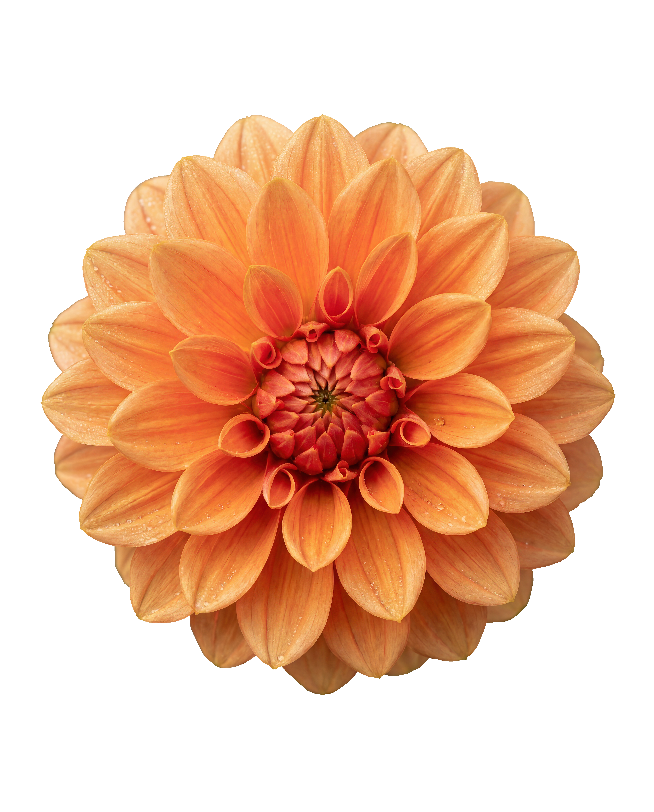
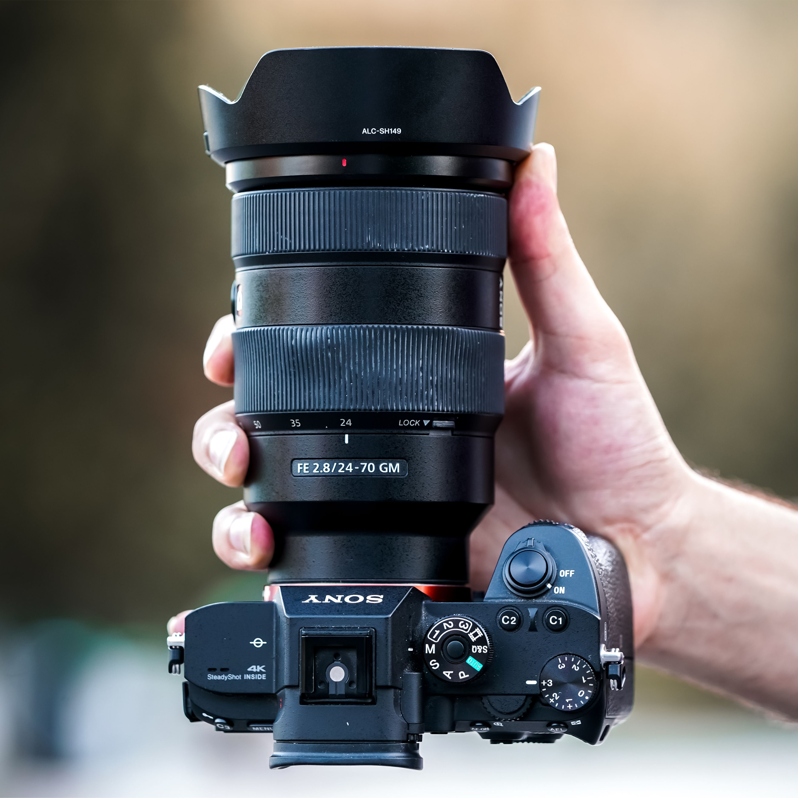

Grundlagen Belichtung Einstellungen Komposition Jetzt Testen →EINSTELLUNGEN DEINER KAMERA
Fotografie lebt von den Einstellungen deiner Kamera. Jede Veränderung beeinflusst, wie viel Licht auf den Sensor trifft, wie scharf das Bild wirkt und welche Stimmung am Ende entsteht.
In diesem Abschnitt bekommst du zuerst einen Überblick über die wichtigsten Werte und lernst anschließend Schritt für Schritt, was Blende, Verschlusszeit, ISO und weitere Einstellungen bewirken.
Blende
Verschlusszeit
ISO

Blendwert
Die Blende regelt, wie viel Licht durch das Objektiv auf den Sensor fällt. Sie wird in Blendwerten **(z. B. f/1.8, f/4, f/11)** angegeben. Je kleiner der Blendwert, desto offener ist die Blende und desto mehr Licht gelangt ins Bild. Gleichzeitig beeinflusst die Blende die Tiefenschärfe, also wie viel vom Bild scharf ist.
Der Blendwert gibt dabei auch die tatsächliche Menge an Licht an, welche durch die Blende fällt. ein Blendwert von f/10 bedeutet, dass nur ein Zehntel des Lichtes durch die Blende fällt.
Werte
Der Blendwert bestimmt maßgeblich die Tiefenschärfe. Eine offene Blende (z. B. f/1.8) erzeugt eine starke Unschärfe im Hintergrund, während eine geschlossene Blende (z. B. f/11) mehr vom Bild scharf macht.
Portrait
f/1.8–f/2.8
unscharfer Hintergrund
Architektur
f/8–f/16
scharfes Gesamtbild
Landschaft
f/8–f/11
>für Detailschärfe
Praxisbereich
Unten findest du Empfehlungen für verschiedene Fotografiesituationen um deine Blende optiomal zu nutzen
Portrait
Für Porträts wird oft eine offene Blende gewählt, damit das Gesicht scharf bleibt und der Hintergrund angenehm weich verschwimmt.
Empfehlung: f/1.8–f/2.8
Tipp: Fokus exakt auf die Augen setzen
Landschaft
Bei Landschaften soll häufig der ganze Raum wirken. Eine eher geschlossene Blende erhöht die Tiefenschärfe und zeigt mehr Details.
Empfehlung: f/8–f/11
Tipp: Zu starkes Abblenden kann Beugung erzeugen
Architektur
Für Gebäude und Innenräume eignen sich mittlere bis geschlossene Blenden, damit Kanten und Oberflächen sauber und präzise wiedergegeben werden.
Empfehlung: f/8–f/11
Tipp: Genug Schärfe wählen, ohne unnötig Licht zu verlieren
Nacht
Bei Nacht hilft eine offenere Blende, damit mehr Licht auf den Sensor fällt. So sind kürzere Zeiten oder niedrigere ISO-Werte möglich.
Empfehlung: f/1.4–f/2.8 aus der Hand
Tipp: Mit Stativ darf die Blende auch etwas geschlossener sein
Häufige Fehler
Zu offene Blende bei Landschaft: wichtige Bereiche werden unnötig unscharf.
Zu geschlossene Blende bei Porträts: der Hintergrund wirkt zu präsent.
Sehr hohe Blendenzahl: Beugung kann das Bild insgesamt weicher machen.
Auto Blende
Viele Kameras können die Blende automatisch anpassen, um eine passende Belichtung zu finden. Das ist besonders hilfreich, wenn sich die Lichtverhältnisse schnell ändern oder du dich stärker auf den Bildaufbau konzentrieren willst.
Hinweis
Offene Blende für Freistellung und Licht, geschlossene Blende für Kontrolle und räumliche Schärfe. Gute Fotografie entsteht oft genau an dieser bewussten Entscheidung.